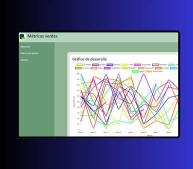

<div class="container-md">
  <div id="carouselProyects" class="carousel slide carousel-dark " data-bs-ride="carousel">
    <div class="carousel-inner">
      <div class="carousel-item active ">
        
        <div class="m-3">
          <h3 class="text-light fw-bold my-1">Juego de adivinanza</h3>
          <a href="https://jhelcy-sandoval.github.io/proyecto-final/"  target="_blank">ver proyecto</a>
        </div>
      </div>
      <div class="carousel-item ">
        
        <div class="m-3">
          <h3 class="text-light fw-bold my-1">Software de gestión de proyectos</h3>
          <a href="https://jhelcyprojects.netlify.app/login"  target="_blank">ver proyecto</a>
        </div>
      </div>
      <div class="carousel-item">
        
        <div class="m-3">
          <h3 class="text-light fw-bold my-1">Seguimiento y Análisis de Germinación</h3>
          <a href="https://m-tricas-verdes.onrender.com/"  target="_blank">ver proyecto</a>
        </div>
      </div>
    </div>
    <button class="carousel-control-prev" type="button" data-bs-target="#carouselProyects" data-bs-slide="prev">
      <span class="carousel-control-prev-icon" aria-hidden="true"></span>
      <span class="visually-hidden">Previous</span>
    </button>
    <button class="carousel-control-next" type="button" data-bs-target="#carouselProyects" data-bs-slide="next">
      <span class="carousel-control-next-icon" aria-hidden="true"></span>
      <span class="visually-hidden">Next</span>
    </button>
  </div>
</div>
